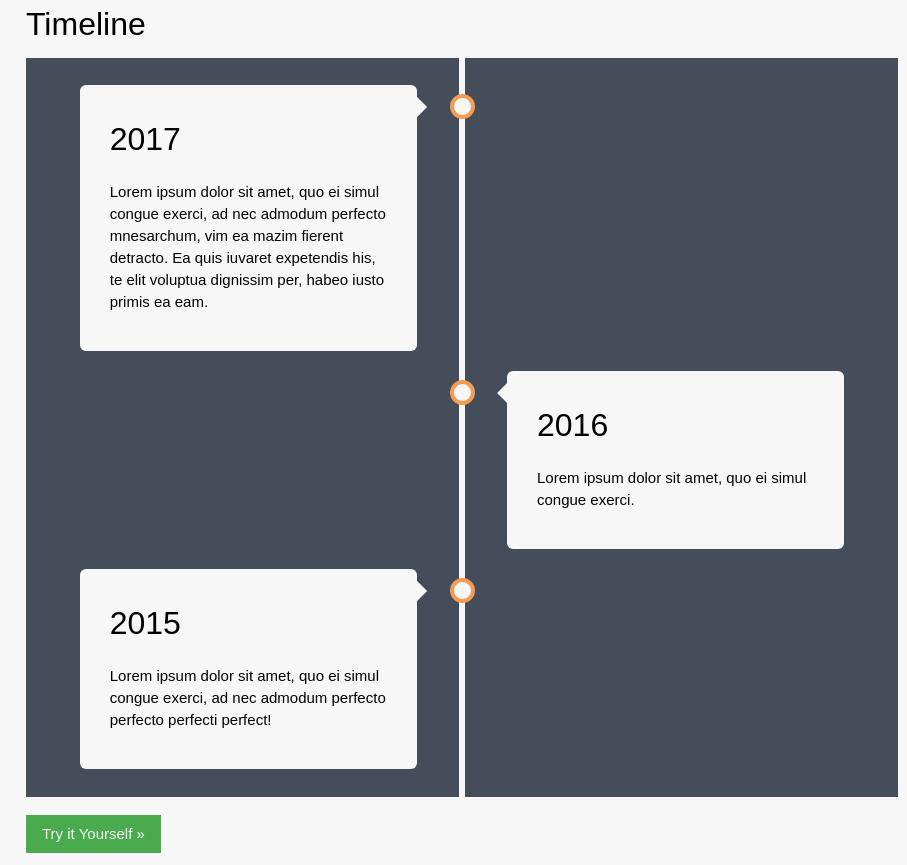
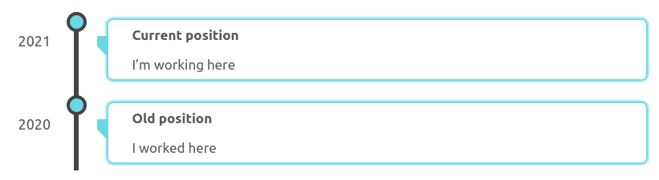

Hugo Timeline Shortcode
February 28, 2021 • edited May 9, 2021
This is a simple timeline shortcode to display timelines in your Hugo posts.
I wanted to add a timeline to the about tab to list my professional experience. I was surprised because I couldn’t find a timeline shortcode online so I developed one myself to fit my needs.
Research
In my mind, the timeline is a series of cards with short descriptions pointing to a line with dots that represent times. So my first attempt was to try to do everything from scratch but I struggle with the annoying CSS position directives.
After getting something that looked similar to what I had in mind, I was not satisfied with the complexity of the generated code so I tried to Google for a similar timeline example and I could find a css example to build a timeline. So I started there.

Modification
I didn’t want a two sides timeline because it feels like it wastes half the screen space so the first modification was to put everything on the right side.
I also had to modify the colors to fit the style of my blog, I’m using #6ad7e5 as primary color variant #c41a16 as secondary color. Also I’m not using pure black, but #444444 for the borders.
I wanted to see the year on the timeline so I added another div to the example and positioned it just next to the timeline. Keep in mind that my goal is to display professional experience, so my time resolution is year/months
I wanted to finish the timeline with a dot, instead of having a line going nowhere, so I moved the timeline dots to the top part and this also forced me to redesign the arrow pointing from the content cards.
Last but not least, instead of using different colors to differentiate cards from the background, I added a shadow to the containers.
And this is how it looks like

1
2
3
4
5
6
7
8
9
10
11
|
{{< timeline >}}
{{% event title="Current position" year="2021"%}}
I'm working here
{{% /event %}}
{{% event title="Old position" year="2020" %}}
I worked here
{{% /event %}}
{{< /timeline >}}
|
Dynamic content
This is good, but I soon realized that I had to display the length of each period somehow. Displaying the start and end dates is an option, but it forces the reader to do the calculation. I could hardcode it as the past never changes, but then, I will have to rebuild my blog each month! No way…
At this moment I had the idea to create a real-time experience counter. what seems easy at a first glance, is NOT. I don’t know if you have ever worked on a project where you had to calculate time differences where you need month precision. The problem is that the calendar is not designed with computers in mind. It is full of exceptions that make the calculation of time differences really hard.
First I needed a way to display time flow. My first attempt was to create a clock like hh:mm:ss. Then, I added years and months like x years x months hh:mm:ss but wait… what about days? The clock looked like 1 year 1 month 134:32:23 and it was not elegant. and turns out that calculating days is hard. fuck February.
I’m using dayjs to calculate the difference between two dates, The following code to get the years and months.
1
2
3
|
total_months = now.diff(start, "M", true)
months = total_months % 12
years = Math.floor((total_months) / 12)
|
This calculates months as a float number and this gave me an idea! I could display this float number with a lot of decimals and it will give the feeling of time moving forward. It looks like 1 year 0.88726634 month
So far so good! I can display real-time experience.
Polish
It is clear that only the first element in the timeline should display the real-time clock, all the others should have a fixed time. For that reason, it was better to precalculate the values and use them. I could simply manually add the dates, but there is a better way! Hugo allows you to use go time package to easily calculate these things.
I wanted the shortcode to look like this, the idea is to define the from and to dates for past blocks and leave to undefined for the present one. This should fallback to now.
1
2
3
4
5
6
7
8
9
10
11
|
{{< timeline >}}
{{% event title="Current position" from="2021-01-01"%}}
I'm working here
{{% /event %}}
{{% event title="Old position" from="2020-01-01" to="2021-01-01" %}}
I worked here
{{% /event %}}
{{< /timeline >}}
|
So I wrote down the necessary code to properly calculate the months between two dates in go and create the duration string like x year f0.000 months taking into account the special cases where if years is 0, it is hidden. and if it is more than 1, add an s to the end. I didn’t pay too much attention to get ms accuracy. there are numerical errors and other things to take into account that make my calculation non-precise. but it is good enough to display what I want. Job experience.
Final result
You can go to the about section to see how it looks like.
here is the code
timeline.html
1
|
<div class="timeline">{{ .Inner }}</div>
|
event.html
1
2
3
4
5
6
7
8
9
10
11
12
13
14
15
16
17
18
19
20
21
22
23
24
25
26
27
28
29
30
31
32
33
34
35
36
37
38
39
40
41
42
43
44
45
46
47
48
49
50
51
52
53
54
55
56
57
58
59
|
{{$duration := ""}}
{{$to := now }}
{{ if ne (.Get "to") ""}}
{{$to = time (.Get "to") }}
{{end}}
{{$enabledTime := ne (.Get "from") ""}}
{{if $enabledTime }}
{{$from := time (.Get "from") }}
{{$tmonths:=mul ($to.Sub $from).Hours 0.00136986301 }}
{{$months := mod $tmonths 12 }}
{{$years := math.Floor (div $tmonths 12)}}
{{$yearStr := "years"}}
{{if lt $years 2 }}{{$yearStr = "year"}}{{end}}
{{$monthStr := "months"}}
{{if lt $months 2 }}{{$monthStr = "month"}}{{end}}
{{$duration = ""}}
{{if gt $years 0 }}{{$duration = printf "%s %.0f %s" $duration $years $yearStr}}{{end}}
{{if gt $months 0 }}{{$duration = printf "%s %d %s" $duration $months $monthStr}}{{end}}
{{end}}
<div class="container">
<div class="content">
<div class="title">{{.Get "title"}}</div>
{{if $enabledTime }}
<div class="moment" {{ if eq .Ordinal 0 }} id="moment" {{ end }}>
{{ if ne .Ordinal 0 }} {{$duration}} {{ end }}
</div>
{{ end }}
<div class="body">{{.Inner}}</div>
</div>
<div class="date">{{$to.Year}}</div>
</div>
{{ if and (eq (.Ordinal) 0) $enabledTime }}
<script>
function non0plural(number, name) {
if (number == 0) {
return ""
}
if (number > 1) {
return number + " " + name + "s"
}
return number + " " +name
}
el = document.querySelector("#moment");
function refresh() {
start = dayjs({{.Get "from"}})
now = dayjs()
total_months = now.diff(start, "M", true)
months = total_months % 12
years = Math.floor((total_months) / 12)
el.innerHTML = non0plural(years,"year")+" "+non0plural(months.toFixed(8),"month")
}
window.setInterval(refresh, 100);
</script>
{{ end }}
|
css
1
2
3
4
5
6
7
8
9
10
11
12
13
14
15
16
17
18
19
20
21
22
23
24
25
26
27
28
29
30
31
32
33
34
35
36
37
38
39
40
41
42
43
44
45
46
47
48
49
50
51
52
53
54
55
56
57
58
59
60
61
62
63
64
65
66
67
68
69
70
71
72
73
74
75
76
77
78
79
80
81
82
83
84
85
86
87
88
89
90
91
92
93
94
95
96
97
98
99
100
101
102
103
104
105
106
107
108
109
110
111
112
113
114
115
116
117
118
119
120
121
122
123
124
125
|
/************************************
timeline
************************************/
/* The actual timeline (the vertical ruler) */
.timeline {
position: relative;
margin: 0 auto;
}
/* The actual timeline (the vertical ruler) */
.timeline::after {
content: "";
position: absolute;
width: 6px;
background-color: #444;
top: 0;
bottom: 0;
left: 10%;
margin-left: -3px;
}
/* Container around content */
.timeline .container {
padding: 10px 10px 10px 40px;
margin-top: 10px;
position: relative;
/* background-color: gray; */
width: 90%;
left: 10%;
}
/* The circles on the timeline */
.timeline .container::after {
content: "";
position: absolute;
width: 25px;
height: 25px;
left: -12px;
background-color: rgb(106, 215, 229);
border: 4px solid #444;
top: 0px;
border-radius: 50%;
z-index: 1;
}
/* date display */
.timeline .container .date {
position: absolute;
top: 22px;
z-index: 1;
left: -10%;
font-size: large;
}
/* Add arrows to the right container (pointing left) */
.timeline .container::before {
content: " ";
height: 0;
position: absolute;
top: 30px;
width: 0;
z-index: 1;
left: 26px;
border: medium solid #6ad7e5;
border-width: 13px 13px 13px 0px;
border-color: #6ad7e5 #6ad7e5 transparent transparent;
}
/* The actual content */
.timeline .content {
box-shadow: 0 0 3px 3px #6ad7e5;
background-color: white;
position: relative;
border-radius: 6px;
transition: box-shadow 0.3s;
}
/* small shadow change on hover*/
.timeline .content:hover {
box-shadow: 0 0 3px 4px #6ad7e5;
}
/* card title format */
.timeline .content .title {
padding: 5px 30px;
font-weight: bold;
display: inline-block;
}
/* time moment format*/
.timeline .content .moment {
color: #c41a16;
text-align: right;
position: absolute;
top: 0;
right: 0;
padding: 5px;
}
/* body size */
.timeline .content .body {
padding: 5px 30px;
}
/* responsive for small devices*/
@media screen and (max-width: 600px) {
.timeline .container {
padding: 10px 10px 0px 40px;
left: 5%;
width: 95%;
}
.timeline .container .date {
font-size: small;
transform: rotate(-90deg);
left: -5%;
top: 30px;
}
.timeline .container::after {
left: 3px;
}
.timeline .content .body {
padding: 5px 5px;
}
.timeline .content .moment {
position: relative;
}
}
|
I know this code will fail if you place two timelines on the same page due to the id="moment". I think this can be fixed by generating a random id with Hugo. but I do not care, it works like this for me. Do not over-engineer things if you do not need it.